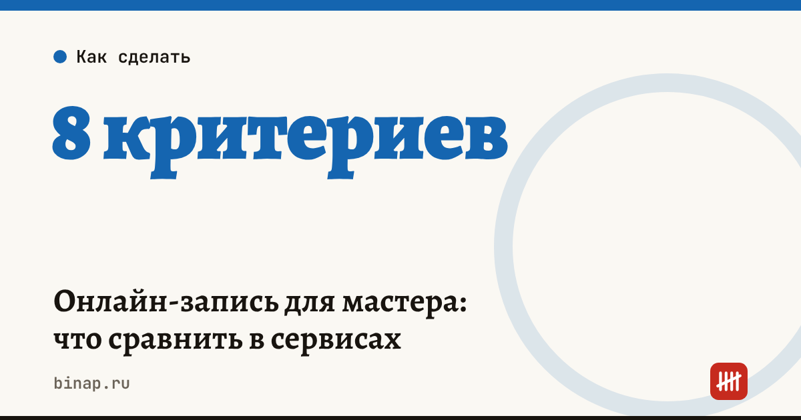

Онлайн-запись для мастера: что сравнить в сервисах

Сервис онлайн-записи окупается, если сокращает неявки и экономит время на переписке с клиентами. Сравнивать сервисы стоит по одинаковым критериям: напоминания, предоплата, база клиентов, интеграции, работа с персональными данными и полная стоимость. Цены и тарифы берите только с официальных страниц на дату сравнения.
Коротко
- Главная польза — меньше неявок: автоматические напоминания и предоплата.
- Сравнивайте не абонплату, а полную стоимость: тариф, SMS-напоминания, комиссия за предоплату.
- База клиентов должна выгружаться — иначе при смене сервиса потеряете клиентов.
- Сервис хранит персональные данные клиентов: проверьте, где и как, и получайте согласие клиента.
- Окупаемость = деньги, которые вернули неявки и сэкономленное время, минус стоимость сервиса.
Сроки, изменения и разборы для ИП и самозанятых — каждое утро в Telegram и MAX. Подпишитесь, чтобы не пропустить.
8 критериев сравнения
| № | Критерий | Что проверить |
|---|---|---|
| 1 | Напоминания | мессенджер, SMS, email; сколько стоят SMS |
| 2 | Предоплата | можно ли брать депозит, комиссия за приём оплаты |
| 3 | База клиентов | история визитов, заметки, выгрузка в таблицу |
| 4 | Интеграции | кнопка записи в соцсетях, на картах, на сайте |
| 5 | Расписание | несколько мастеров и кабинетов, перерывы, длительность услуг |
| 6 | Чеки | может ли сервис передавать данные для чека самозанятого или кассы |
| 7 | Персональные данные | где хранятся данные, есть ли форма согласия клиента |
| 8 | Цена | тариф за мастера, лимиты, что входит, что платно |
Окупится ли сервис
Пример (расчёт редакции, цифры условные). Мастер принимает 80 клиентов в месяц, средний чек — 2 500 ₽, неявок — 8 в месяц.
| Без сервиса | С сервисом | |
|---|---|---|
| Неявки в месяц | 8 | 4 (напоминания и предоплата) |
| Потерянная выручка | 20 000 ₽ | 10 000 ₽ |
| Стоимость сервиса и SMS | 0 ₽ | 2 000 ₽ |
| Результат | — | +8 000 ₽ в месяц |
Плюс время: если переписка о записи занимала час в день, это 20–25 часов в месяц, которые можно отдать клиентам. Сколько стоит ваш час — в калькуляторе дохода мастера.
Сервис онлайн-записи с напоминаниями и предоплатой: ссылка
Что сделать
- Посчитайте неявки за последний месяц и потерянную выручку.
- Выберите 2–3 сервиса и сравните по таблице на пробном периоде.
- Проверьте, выгружается ли база клиентов, до того как переносить её в сервис.
- Добавьте в форму записи согласие на обработку персональных данных.
Как платить налог мастеру — самозанятость или патент. Как отвечать на отзывы — шаблоны с нейросетью. Все шаги — в разделе «Мастерам и услугам».
Частые вопросы
Брать ли предоплату? Предоплата снижает неявки, но часть клиентов от неё отказывается. Начните с депозита для новых клиентов и длинных услуг.
Нужно ли согласие клиента на хранение его данных? Да, если вы собираете имя, телефон и историю визитов — это персональные данные. Форма согласия обычно есть в сервисе записи.
Что если сервис закроется? Регулярно выгружайте базу клиентов в таблицу — это ваша страховка.